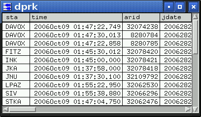
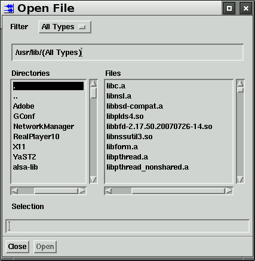
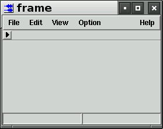
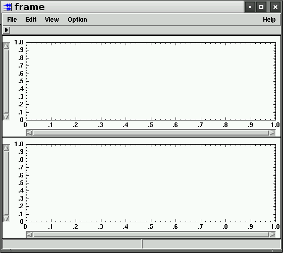
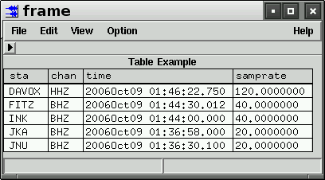

The graphical components that can be created with the create command are listed below.
|
Component |
Description |
ArrowButton |
A Motif XmArrowButton widget |
Button |
A Motif XmPushButton widget Synopsis: [PARENT].create name=NAME type="Button" [position=POS] The optional position is the position of the button in a menu list. A value of -1 positions the button alphabetically. A value of 0 appends the button to the end of the menu list. Any other value will position the button at that location. |
Choice |
An option menu created with XmCreatePulldownMenu and XmCreateOptionMenu. Synopsis: [PARENT].create name=NAME type="Choice" choices=LIST The command "value" returns the choice. For example: ... align_popup.create name="choice" type="Choice" choices="observed,predicted" ... if(align_popup.choice.value == "observed") ... |
CPlotClass |
A general plotting widget. See the example in Frame below. |
A subclass of the Table component for displaying table objects. The following script
create name="dprk" type="FormDialog"
dprk.create name="table" type="CSSTable" args={
topAttachment:ATTACH_FORM
bottomAttachment:ATTACH_FORM
leftAttachment:ATTACH_FORM
rightAttachment:ATTACH_FORM
visibleRows:10
width:400
}
read file="../../data/tutorial/DPRK_reduced.wfdisc"
foreach(arrival, a)
dprk.table.add_record a
endfor
dprk.open
creates the window  | |
Form |
A Motif XmForm widget |
FileChoice |
A subclass of the Choice component whose last choice is "(choose file)", which is selected opens a FileDialog. The file selected with the FileDialog becomes the current choice of the FileChoice component. If the optional argument choose_file is false, the FileDialog will list only directories. Synopsis: [PARENT].create name=NAME type="FileChoice" [choices=LIST] [choose_file=(true,false)] ... form.create name="file_choice" type="FileChoice" choices="tmp.wfdisc" ... file = file_choice.value |
FileDialog |
A FormDialog containing a modified Motif FileSelectionBox. Synopsis: [PARENT].create name=NAME type="FileDialog" [file_type=FILE_TYPE] [dir=INITIAL_DIR] [file_suffixes=SUFFIXES] The optional argument file_type can be one of EXISTING_FILE_OR_DIR, EXISTING_FILE, EXISTING_DIR, FILE_OR_DIR, FILE_ONLY, DIR_ONLY, or WRITE_FILE. The optional argument file_suffixes is a list of file suffixes to display. The command getSelection returns the selection when the Open button is selected. The commands create name="Open File" type="FileDialog" file_type="EXISTING_FILE" dir="/usr/lib" file_suffixes="so,a" open_file.open file = open_file.getSelection create the window shown below.  |
FormDialog |
A popup window created with XtCreatePopupShell(..,vendorShellWidgetClass,..). The window is initially empty. |
Frame |
A FormDialog that contains a MenuBar, a ToolBar, a MainWindow and an InfoArea. The commands create name="frame" type="Frame" frame.open create the window shown below.  Use the listChildren command to see the hierarchy of children. geotool> frame.listChildren mainWindow menuBar toolbar infoArea geotool> frame.menuBar.listChildren File Edit View Option Help geotool> frame.mainWindow.listChildren workArea geotool> frame.mainWindow.workArea.listChildren frameForm separator Add Buttons, Toggles, Menus, etc to the frame.menuBar.File, frame.menuBar.Edit, etc. Add components to the frameForm. For example, the script below
create name="frame" type="Frame"
frame.mainWindow.workArea.frameForm.create name="plot1" type="CPlotClass" args={
topAttachment:ATTACH_FORM
leftAttachment:ATTACH_FORM
rightAttachment:ATTACH_FORM
height:200
}
frame.mainWindow.workArea.frameForm.create name="plot2" type="CPlotClass" args={
topAttachment:ATTACH_WIDGET
topWidget:plot1
leftAttachment:ATTACH_FORM
rightAttachment:ATTACH_FORM
bottomAttachment:ATTACH_FORM
height:200
}
frame.open
creates the window shown below.  |
FrameTable |
A Frame that contains a Table |
InfoArea |
A widget for displaying a single line of text at the bottom of Frames |
Label |
A Motif XmLabel widget |
List |
A Motif XmList widget |
MainWindow |
A Motif XmMainWindow widget |
Map |
A Map widget |
MenuBar |
A Motif XmCreateMenuBar widget |
Menu |
A Motif XmCreatePulldownMenu widget |
MultiTable |
A subclass of the Table component for displaying two CSS table types per row |
Pane |
A Motif XmPanedWindow widget |
PopupMenu |
A Motif XmCreatePopupMenu widget |
RadioBox |
A Motif XmCreateRadioBox widget |
RowColumn |
A Motif XmRowColumn widget |
Scale |
A Motif XmScale widget |
ScrollBar |
A Motif XmScrollBar widget |
ScrolledPane |
A widget that is like a combination of the scrolledWindow and the pane |
ScrolledWindow |
A XmScrolledWindow widget |
Separator |
A Motif XmSeparator widget |
TabClass |
A widget that creates a tab for each child |
A Table component for displays any tabular data. For example, the following script
create name="frame" type="Frame"
frame.mainWindow.workArea.frameForm.create name="table" type="Table" args={
topAttachment:ATTACH_FORM
bottomAttachment:ATTACH_FORM
leftAttachment:ATTACH_FORM
rightAttachment:ATTACH_FORM
columns:4
visibleRows:10
columnLabels:sta,chan,time,samprate
tableTitle:Table Example
}
alias tb=frame.mainWindow.workArea.frameForm.table
tb.add_row "DAVOX" "HHZ" "2006Oct09 01:46:22.750" "120.0000000"
tb.add_row "FITZ" "BHZ" "2006Oct09 01:44:30.012" "40.0000000"
tb.add_row "INK" "BHZ" "2006Oct09 01:44:00.000" "40.0000000"
tb.add_row "JKA" "BHZ" "2006Oct09 01:36:58.000" "20.0000000"
tb.add_row "JNU" "BHZ" "2006Oct09 01:36:30.100" "20.0000000"
frame.open
creates the window shown below.  | |
TableQuery |
A TableViewer subclass that has a database connection. |
TableViewer |
A Frame component with tabs for CSSTable components. This is the TableViewer that is created by the geotool waveform window File/TableViewer option. |
TextDialog |
A FormDialog with a TextField child |
TextField |
A Motif XmText widget |
Toggle |
A Motif XmToggleButton widget |
ToolBar |
A RowColumn subclass for displaying buttons below the MenuBar. |
WaveformView |
A Component for displaying waveforms. |
WaveformWindow |
A Frame window with a WaveformView child and all processing options. This is the main geotool waveform window. |
XFrame |
Motif XmFrame widget |
The callback types are listed for all Components that have callbacks. Callback scripts are defined by the command
componentName.callbackType={
... script ...
}
where componentName is the name of the Component. For the first waveform window, the componentName is not needed, so all callback assignments start with the callbackType. For other windows, the componentName is needed. For example, to assign a callback script to the crosshair of the first plot in the FK Multi-Band window, use:
fk_multi_band.plot1.crosshairCallback={
print fk_multi_band.plot1.crosshair[cursor_index].x(%.2f) fk_multi_band.plot1.crosshair[cursor_index].y(%.2f)
}
|
Component |
Component Callbacks |
|
activateCallback Called when the ArrowButton is selected. |
|
|
activateCallback Called when the Button is selected.
Option.create name="F24" type="button" # Create a button in the Option menu.
# Specify the commands that will be executed when the button is selected
Option.F24.activateCallback={
foreach(sel_wave, w) # Loop over all selected waveforms
filter w low=2. high=4. order=3 type="BP" # Filter each selected waveform
endfor
}
|
|
|
setSensitiveCallback Called when the sensitivity of the Component is changed. All graphical components are subclasses of the Component class, so this callback is enabled for all components. setVisibleCallback Called when the visibility of the Component is changed. All graphical components are subclasses of the Component class, so this callback is enabled for all components. |
|
|
activateCallback Called when a file is selected. |
|
|
popdownCallback Called when a FormDialog popup window is closed. |
|
|
defaultActionCallback Called when an item is double clicked. browseSelectionCallback Called when an item is selected in the browse selection mode. extendedSelectionCallback Called when items are selected using the extended selection mode. multipleSelectionCallback Called when an item is selected in multiple selection mode. singleSelectionCallback Called when an item is selected in single selection mode.
align_popup.create name="list" type="List" args={
topAttachment:ATTACH_WIDGET
topWidget:choice
topOffset:5
bottomAttachment:ATTACH_WIDGET
bottomWidget:sep
leftAttachment:ATTACH_FORM
leftOffset:5
rightAttachment:ATTACH_FORM
selectionPolicy:SINGLE_SELECT
visibleItemCount:7
itemCount:7
items:FirstP,P,Pn,Pg,S,Sn,Lg
}
# The callback for the List component. This script is interpreted
# when a phase is selected from the List.
align_popup.list.singleSelectionCallback {
align_on_phase align_popup.list.get_selected
}
|
|
|
selectStationCallback Called when a station symbol is selected or deselected. dragStationCallback Called as a station symbol is dragged to a new location. selectSourceCallback Called when a source symbol is selected or deselected. dragSourceCallback Called as a source symbol is dragged to a new location. mapMeasureCallback Called when the measurement circle or azimuth is moved. selectArcCallback Called when an arc is selected or deselected. selectCircleCallback Called when a circle is selected or deselected. cursorMotionCallback Called as the cursor is moved over the map. shapeSelectCallback Called when a shape is selected or deselected. symbolSelectCallback Called when a symbol is selected or deselected. symbolInfoCallback Called when the cursor moves over a symbol. utmCallback Called when a UTM map cell is selected. polarSelectCallback Called when a selection is made on the Polar projection. selectBarCallback Called when the color bar is selected. |
|
|
cascadingCallback Called before a pulldown menu is displayed. This callback can be used to make adjustments to the Menu children (hide or display them, change labels, change sensitivity, etc.) |
|
|
valueChangedCallback Called when the value of the slider has changed. |
|
|
dragCallback Called on each incremental change of position when the slider is being dragged. incrementCallback Called when the user takes an action that moves the ScrollBar by one increment and the value increases. decrementCallback Called when the user takes an action that moves the ScrollBar by one increment and the value decreases. pageIncrementCallback Called when the user takes an action that moves the ScrollBar by one page increment and the value increases. pageDecrementCallback Called when the user takes an action that moves the ScrollBar by one page increment and the value decreases. |
|
|
resizeCallback Called when the ScrolledPane resizes. |
|
|
tabCallback Called when the ScrolledPane resizes. insensitiveTabCallback Called when the ScrolledPane resizes. |
|
|
selectRowCallback Called after a row is selected or deselected. selectColumnCallback Called after a column is selected or deselected. columnMovedCallback Called after a column is moved. valueChangedCallback Called after text is deleted from or inserted into a cell. choiceChangedCallback Called after a cell choice is changed. cellSelectCallback Called after a cell is selected or deselected. rowChangeCallback Called after a row is added or removed. |
|
|
XtNdataChangeCallback Called when there is a change to the tables. |
|
|
XtNdataChangeCallback Called when there is a change to the tables. |
|
|
activateCallback Called when the user invokes an event that calls the activate() action. valueChangedCallback Called after text is deleted from or inserted into the TextField. |
|
|
valueChangedCallback Called when the Toggle value is changed. |
|
|
All of the callbacks below are available for any window that displays waveforms or a new window that is created with type "WaveformView" or "WaveformWindow". singleSelectDataCallback Called after waveform selection is made and only one waveform remains selected. For example:
singleSelectDataCallback={
print sel_wave[1].sta sel_wave[1].chan
}
positionCallback Called after one or more waveforms are repositioned. The variable wpw is an array of the indices of the wave objects that were repositioned. For example:
positionCallback={
foreach(wpw)
print wave[wpw].sta wave[wpw].chan wave[wpw].xpos wave[wpw].ypos
endfor
}
selectArrivalCallback Called when an arrival is selected or deselected. The variable wpa is the index of the arrival that was selected or deselected. For example:
selectArrivalCallback={
print arrival[wpa].sta arrival[wpa].phase arrival[wpa].selected
}
retimeCallback Called after an arrival is retimed. The variable wpa is the index of the arrival that was retimed. For example:
retimeCallback={
print arrival[wpa].sta arrival[wpa].phase arrival[wpa].time
}
waveformInfoCallback Called when the mouse cursor moves over the waveform label, before the waveform information popup is displayed. The variable wpw is the index of the wave object. For example:
waveformInfoCallback={
print wave[wpw].sta wave[wpw].chan wave[wpw].time
}
arrivalInfoCallback Called when the mouse cursor moves over an arrival label, before the arrival information popup is displayed. The variable wpa is the index of the arrival. The variable wpw is the index of the wave object. For example:
arrivalInfoCallback={
print arrival[wpa].sta arrival[wpa].chan arrival[wpa].phase wave[wpw].chan
}
modifyWaveformCallback Called when a waveform is modified. The variable wpw is an array of the indices of the wave objects that were modified. For example:
modifyWaveformCallback={
foreach(wpw)
print wave[wpw].sta wave[wpw].chan wave[wpw].tbeg
endfor
}
addArrivalCallback Called just before an arrival is created. The variable wpw is the index of the wave object. The arrival time is the variable new_arrival_time. For example:
addArrivalCallback={
print wave[wpw].sta wave[wpw].chan new_arrival_time(%t)
}
dataChangeCallback Called when any waveform is added, deleted, modified, or selected. alignCallback Called when the waveform alignment is changed. measureArrivalCallback Called just before measurements are made to create an arrival. The variable ma_net returns the network, the variable ma_sta returns the station, the variable ma_chan returns the channel, and the variable ma_phase returns the phase. This callback can be used to set station and phase dependent measurement parameters in the Arrival Parameters table. For example:
measureArrivalCallback={
arrival_parameters.defaults
if( ma_net ~= 'JKA' )
arrival_parameters stav_len=2. min_snr=3.0 ...
else if( ma_net ~= 'GERES' )
arrival_parameters fk_lead=5.0 fk_lag=7.0 ...
else if(...
}
measureAmplitudeCallback Called just before an amplitude measurement is made for an arrival. The variable ma_net returns the network, the variable ma_sta returns the station, the variable ma_chan returns the channel, and the variable ma_phase returns the phase. This callback can be used to set station and phase dependent measurement parameters in the Amplitude Parameters table. For example:
measureAmplitudeCallback={
amplitude_parameters.defaults
if( ma_net ~= 'JKA' )
amplitude_parameters mb_filter_lo_cut=1.0 ml_sta_length=1.5 ...
else if( ma_net ~= 'GERES' )
amplitude_parameters ml_filter_locut=1.5 ml_depth_max=35. ...
else if(...
}
crosshairCallback Called after a crosshair cursor is repositioned. The variable cursor_index is the index of the crosshair that has been moved. For example:
crosshairCallback={
print crosshair[cursor_index].x(%.2f) crosshair[cursor_index].y(%.2f)
}
crosshairDragCallback Called as the crosshair cursor is repositioned. The variable cursor_index is the index of the crosshair that is moving. lineCallback Called after a line cursor is repositioned. The variable cursor_index is the index of the crosshair that has been moved. For example:
lineCallback={
print line_cursor[cursor_index].label line_cursor[cursor_index].x(%.2f)
}
lineDragCallback Called as the line cursor is repositioned. The variable cursor_index is the index of the line that is moving.< doubleLineCallback Called after time-window cursor is repositioned. The variable cursor_index is the index of the time-line that has been moved. For example:
doubleLineCallback={
print time_window[cursor_index].tmin time_window[cursor_index].tmax time_window[cursor_index].duration
}
doubleLineDragCallback Called as the time-window cursor is repositioned. The variable cursor_index is the index of the time-window that is moving. doubleLineScaleCallback Called as the time-window cursor duration is changing. The variable cursor_index is the index of the time-window that is changing. For example:
doubleLineScaleCallback={
print time_window[cursor_index].duration
}
limitsCallback Called when the plot limits are changed. For example:
limitsCallback={
print plot_xmin plot_xmax plot_ymin(%.2f) plot_ymax(%.2f)
}
horizontalScrollCallback Called when the plot scrolls horizontally.
horizontalScrollCallback={
print plot_xmin plot_xmax
}
phaseLineCallback Called after the phase-line cursor is repositioned. The variable cursor_index is the index of the phase-line that has been moved. For example:
phaseLineCallback={
print phase_line[cursor_index].label phase_line[cursor_index].x(%.2f)
}
phaseLineDragCallback Called as the phase-line cursor is repositioned. The variable cursor_index is the index of the phase-line that is moving. |